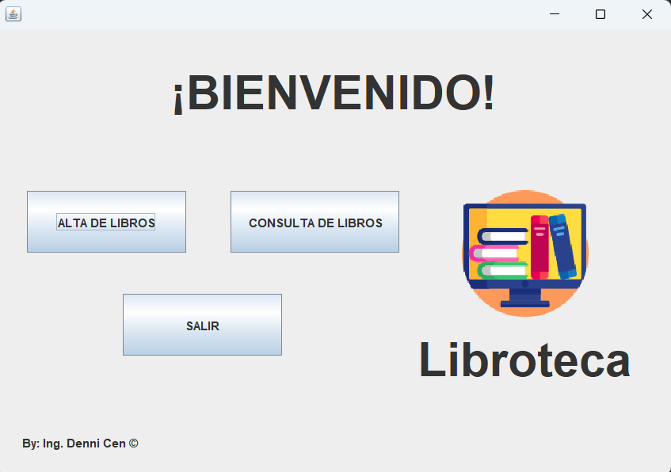
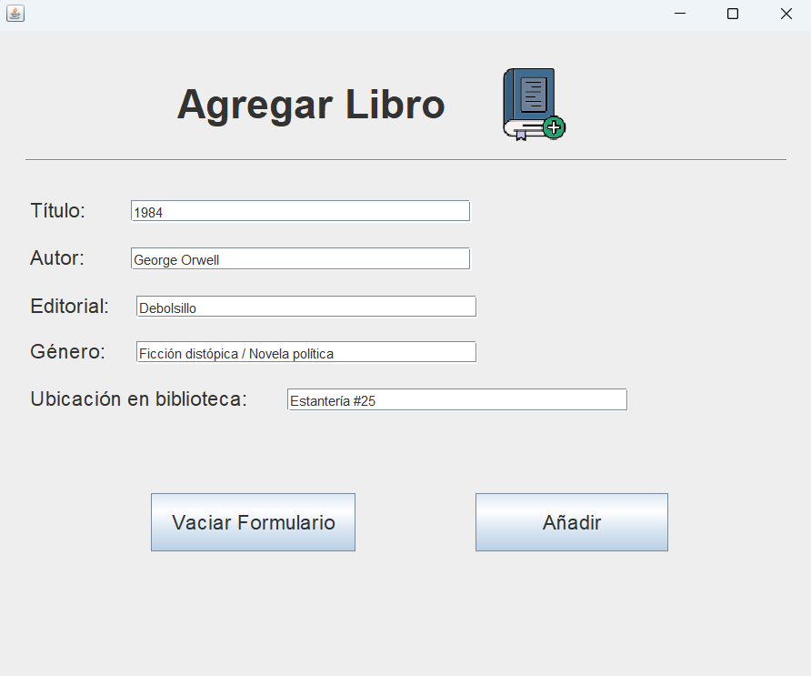
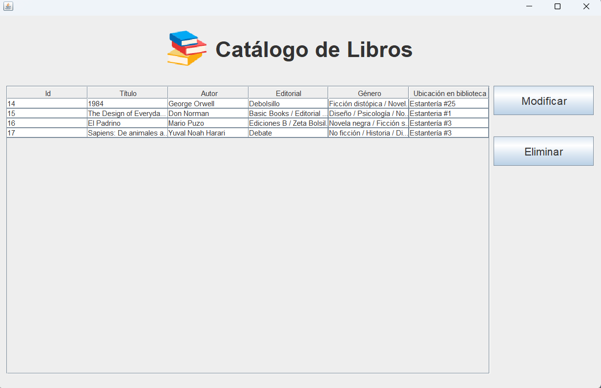
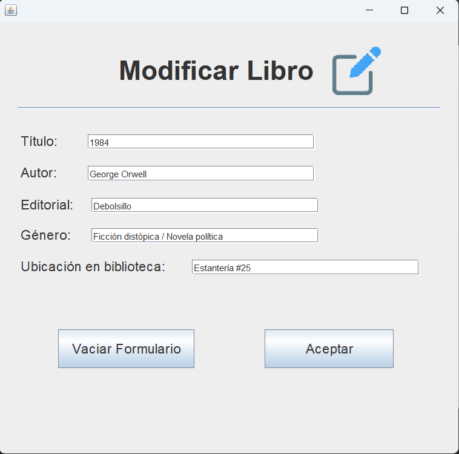
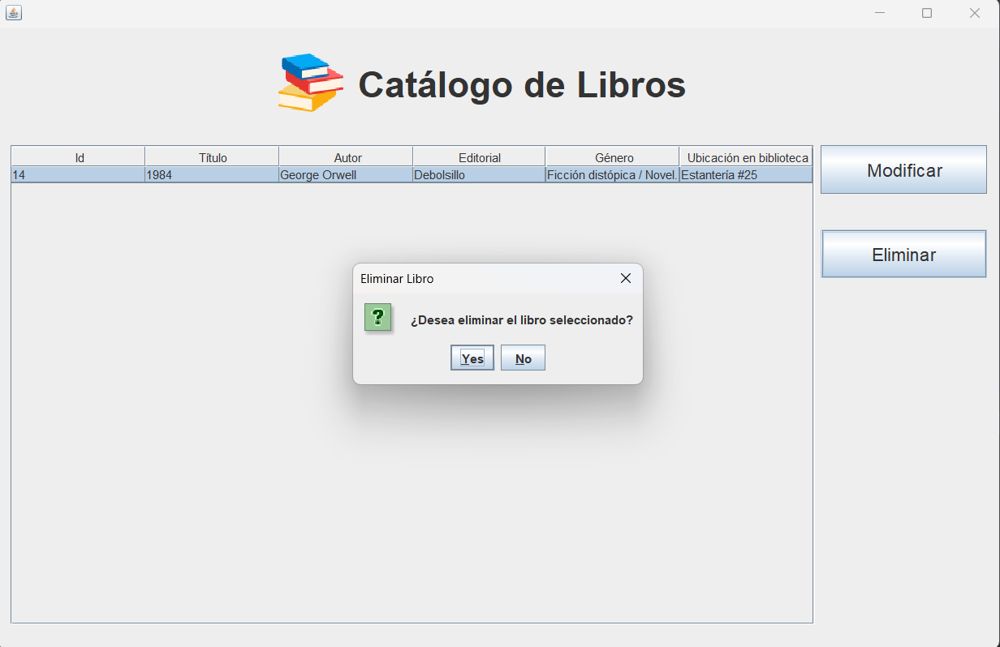
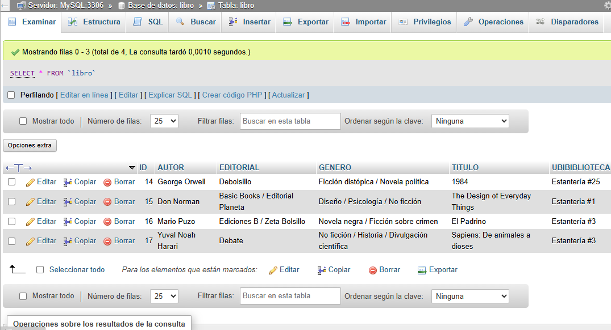

Denni Cen
Denni Cen
Aplicación de escritorio para gestionar libros en una biblioteca de manera local, donde se presenta la información de los libros mediante una tabla, asi como la ubicación del libro en la biblioteca.





